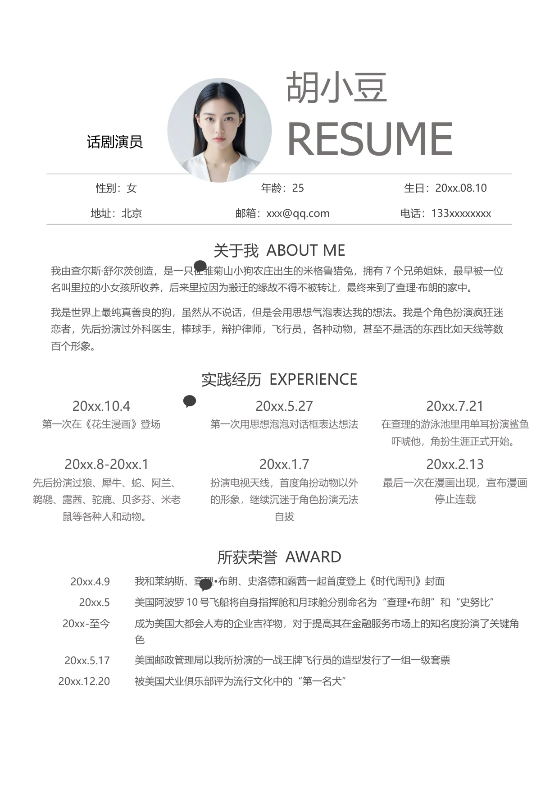

话剧演员
胡小豆
RESUME
性别：女
年龄：25
生日：20xx.08.10
地址：北京
邮箱：xxx@qq.com
电话：133xxxxxxxx
关于我 ABOUT ME
我由查尔斯·舒尔茨创造，是一只在雏菊山小狗农庄出生的米格鲁猎兔，拥有7 个兄弟姐妹，最早被一位
名叫里拉的小女孩所收养，后来里拉因为搬迁的缘故不得不被转让，最终来到了查理·布朗的家中。
我是世界上最纯真善良的狗，虽然从不说话，但是会用思想气泡表达我的想法。我是个角色扮演疯狂迷
恋者，先后扮演过外科医生，棒球手，辩护律师，飞行员，各种动物，甚至不是活的东西比如天线等数
百个形象。
实践经历 EXPERIENCE
20xx.10.4
第一次在《花生漫画》登场
20xx.5.27
第一次用思想泡泡对话框表达想法
20xx.7.21
在查理的游泳池里用单耳扮演鲨鱼
吓唬他，角扮生涯正式开始。
20xx.8-20xx.1
先后扮演过狼、犀牛、蛇、阿兰、
鹈鹕、露茜、驼鹿、贝多芬、米老
鼠等各种人和动物。
20xx.1.7
扮演电视天线，首度角扮动物以外
的形象，继续沉迷于角色扮演无法
自拔
20xx.2.13
最后一次在漫画出现，宣布漫画
停止连载
所获荣誉 AWARD
20xx.4.9
我和莱纳斯、查理•布朗、史洛德和露茜一起首度登上《时代周刊》封面
20xx.5
美国阿波罗10 号飞船将自身指挥舱和月球舱分别命名为“查理•布朗”和“史努比”
20xx-至今
成为美国大都会人寿的企业吉祥物，对于提高其在金融服务市场上的知名度扮演了关键角
色
20xx.5.17
美国邮政管理局以我所扮演的一战王牌飞行员的造型发行了一组一级套票
20xx.12.20
被美国犬业俱乐部评为流行文化中的“第一名犬”